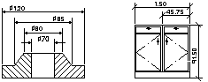

Autodesk AutoCAD 2021: ActiveX Developer's Guide > Dimensions, Leaders, and Geometric Tolerances > About Dimensioning Concepts (VBA/ActiveX) >
Dimension text refers to any kind of text associated with dimensions, including measurements, tolerances (both lateral and geometric), prefixes, suffixes, and textual notes in single-line or paragraph form.
You can use the default measurement computed by AutoCAD as the text, supply your own text, or suppress the text entirely. You can use dimension text to add information, such as special manufacturing procedures or assembly instructions.

Single-line dimension text uses the active text style as specified by the ActiveTextStyle property. Paragraphs of text use the active text style with any modifications you make in your text string.